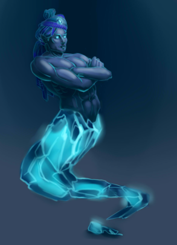

<div class="content">
<div class="scroller">
<h2>Описание ифрита</h2>

<p style="color:red">Это приложение требует настройки н 15 канал
                  ДС и положения точки сборки на уровне не ниже анахата чакры. </p>
<p> Ифрит-симбионт сотоит из управляющего ифрита и жука скарабея
                  выполняющего роль интерфейса. </p>
<p> Управляющий ифрит является составной частью Скарабея и
                  программируется для управления (через кнопки управления)
                  чакрами жука Скарабея(как живого существа) в зависимости от
                  ситуации внутри и вокруг человека. </p>
<p> В свою очередь, жук Скарабей, в зависимости от полученной
                  команды от управляющего ифрита, запускает соответствующие
                  функции на уровне своих четырех чакр. Поскольку Скарабей -
                  симбионт(встроен в ауру человека), это воздействие передается
                  на соответствующие чакры человека, реализуя заданные функции.
                </p>
<p> Поэтому, управляющий ифрит пришивается к управляющей (синей)
                  чакре Скарабея. Это приложение создает ифрита помощника
                  симбионта со следующими функциями: </p>
<p> - Защита - включается при возникновении опасности
                  зафиксированной подсознанием человеком- включает защитную
                  сферу земли; </p>
<p> - Лечение — включается при возникновении ощущений боли или
                  дискомфорта в какой либо области и подключает биоценоз; </p>
<p> - Источник энергии — Солнце, работает в фоновом режиме для
                  создания сферы жизни вокруг человека, усиливается в
                  соответствии с запросом на выполнении функции; </p>
<p> - Иммунитет - работает в фоновом режиме от источника энергии
                  в диапазоне Свахистана чакры, усиливается при снижении уровня
                  ци тумана(эфирной энергии) в теле ниже нормы </p>
<p> - Усиление интуиции — включается в стрессовых ситуациях,
                  требующих неординарных действий, включает правое полушарие и
                  дружественного союзника ; </p>
<p> - Помощь в работе — включается при выполнении магической
                  работы! </p>
<p> - Удача — включается в неординарных ситуациях требующих
                  выбора </p>
<p style="color:red">Настройка на 15 канал: Фаерболл: </p>
<blockquote style="padding-left:100px"> ВЭГАР ЕТТОР ИРРИ ОРРИС <br/>
                  ВЭТТИ ОРТ ЕРРО ЕЛЛ ЕРР ОРРИС ОРРИ ЕССИ ОППИ ОРИС <br/>
                  НЕ ОРТ ЕРР ИСС ВЭК ЕЛЛИ ОРРИ ЕККУН ДО ОРТ ЕРРО <br/>
                  ИСС ВЭТОРИ ЕЛЛ ОСС ОРРИС ОМЕР ВЭК ЕРРО ЕСС ОЛЛИ <br/>
</blockquote>
<p style="color:red">Активация 15-го канала </p>
<blockquote style="padding-left:100px"> ВАРД ЕККУН СО ЕККУН
                  ЕТТОРИ ЕТТОР ФОРТ ЕРРО<br/>
                  ИССТ ОМЕР ВАРИС ЕРРО ЕРРО ВАРД СУББИ ОРТ <br/>
                  ЕРРО ЕККУН ВАРТ ЕРРО </blockquote>

</div>

